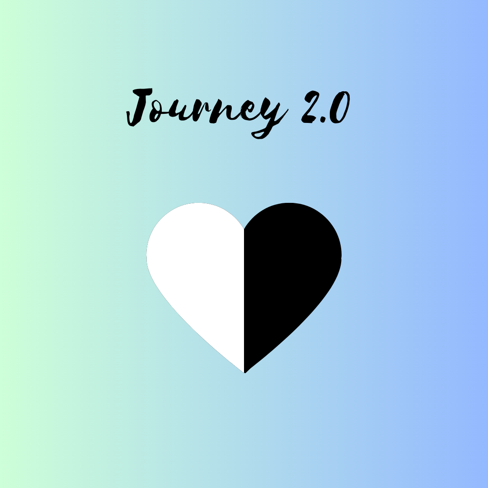
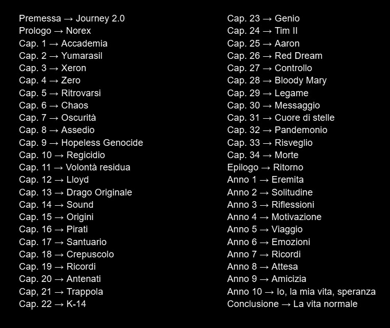

Journey è un libro scritto da Emmanuele Trotta (anche il creatore di questo sito!)
L'idea, nata più o meno verso primavera 2022 - seconda metà del terzo anno delle medie, mi venne in mente dopo che la mia professoressa di italiano di allora, notando che non stavo passando un buon periodo, mi disse "Perché non provi a scrivere quello che provi?" Da lì, poco a poco, è nata la struttura di Journey.
L'obiettivo di questo sito è offrire tutte le informazioni necessarie, nonché facilitare non solo la pubblicazione e diffusione del libro, ma anche la raccolta di feedback dei lettori che si cimentano nella lettura.
Giustamente ti starai chiedendo: "Ci sono motivi validi per cui dovrei leggere questo libro?"
1. Questo libro parla di ragazzi adolescenti che affrontano temi importanti dell'adolescenza (come ad esempio l'accettare sé stessi, l'importanza degli amici o la depressione), in chiave fantasy (influenzato fortemente dalla saga Kingdom Hearts , che se siete fan della Disney o meno vi consiglio di recuperare).
2. Questo libro non nasce con l'obiettivo di diventare conosciuto e fruttarmi barche di soldi: nasce per essere un posto sicuro, per voi lettori che magari vi potreste rivedere in alcuni dei personaggi, e per me scrittore in quanto luogo dove poter parlare, come detto sopra, di come mi sono sentito in quel periodo della mia vita.
3. Questo libro vuole essere una storia bella da raccontare, emozionante e strappa-lacrime, tra momenti di gioia e disperazione. Ma per farlo ha bisogno di lettori che possano provare queste emozioni.
Se ho attirato la vostra attenzione, è giunto il momento di darvi qualche informazione più specifica su quello che andrete a leggere. Iniziamo col citare i vari capitoli di cui questo libro è composto:

Qua sotto è riportata una lista con i nomi di tutti i capitoli di Journey. I più attenti avranno notato che nella premessa vi è scritto "Journey 2.0". Il "2.0" indica che questa è la seconda volta che provo a scrivere questo libro. La prima volta a causa di impegni vari mi sono dovuto fermare e, analizzando tutto, ho ritenuto fosse meglio ricominciare da zero, alterando alcune delle cose che avevo in mente in origine. Una cosa è rimasta: la divisione in parti. Infatti il libro si divide in 3 parti (che vanno dal prologo al capitolo 10, dal capitolo 11 all'epilogo e dall'anno 1 alla conclusione. La premessa non viene contata). La prima parte si focalizza sull'apprendimento di alcuni valori chiave, poi messi in pratica nella seconda parte. La terza parte infine è una parte nuova (e con questo intendo dire che in origine non era prevista), che riguarda un eremitaggio che il protagonista si ritroverà costretto ad affrontare.
Trovare il libro è molto semplice e, soprattutto, gratuito. Per farlo vi basterà andare su instagram , wattpad oppure qui per accedere al documento google. Consiglio caldamente di andare su instagram in quanto lì sono più attivo (o meglio, lì sarete aggiornati su quando usciranno i vari capitoli. Inoltre mentre aspettate a volte pubblico qualche componimento poetico di mia stesura), tuttavia se andate su wattpad potete trovare quel poco che ho scritto della prima stesura del libro (e confrontare con la nuova).
Per inviare feedback hai diverse opzioni: puoi scrivere un commento su wattpad, mandarmi un messaggio sul profilo instagram, mandare una mail a project.journey.87@gmail.com oppure compilare questo modulo google se vuoi rimanere anonimo. Sappi che le recensioni potrebbero essere riportate in futuro, magari proprio su questo sito, IN MANIERA ANONIMA. Fa attenzione a quello che scrivi. Non so chi sei ma leggo comunque cosa scrivi.